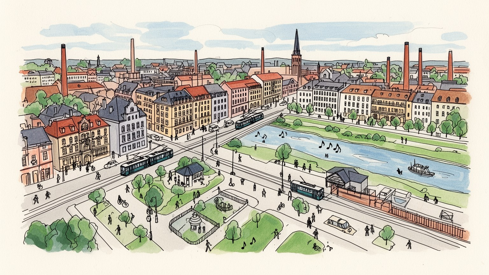
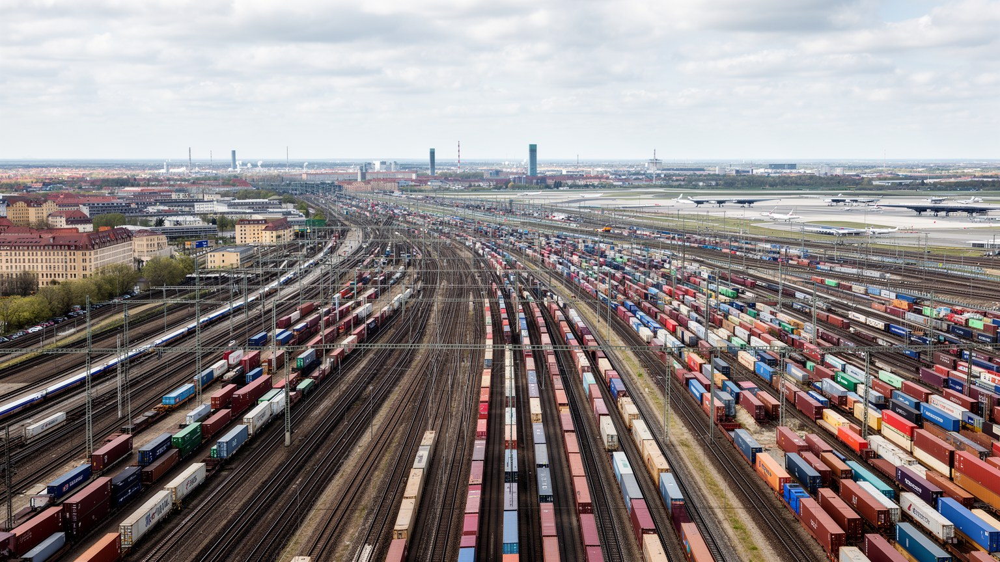
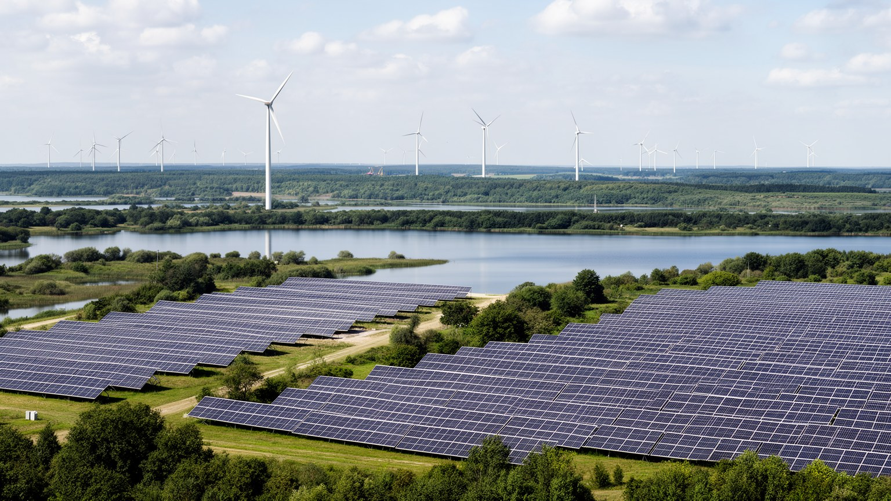
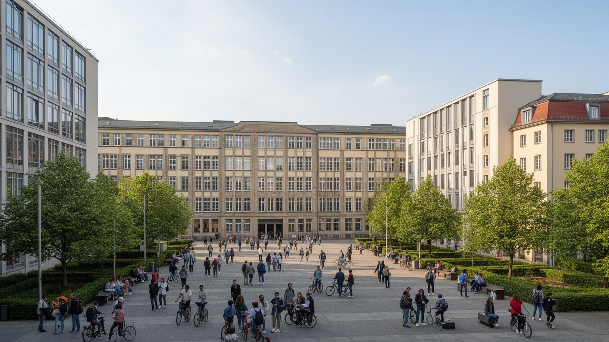
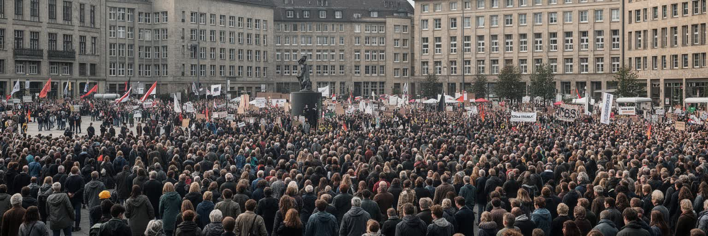
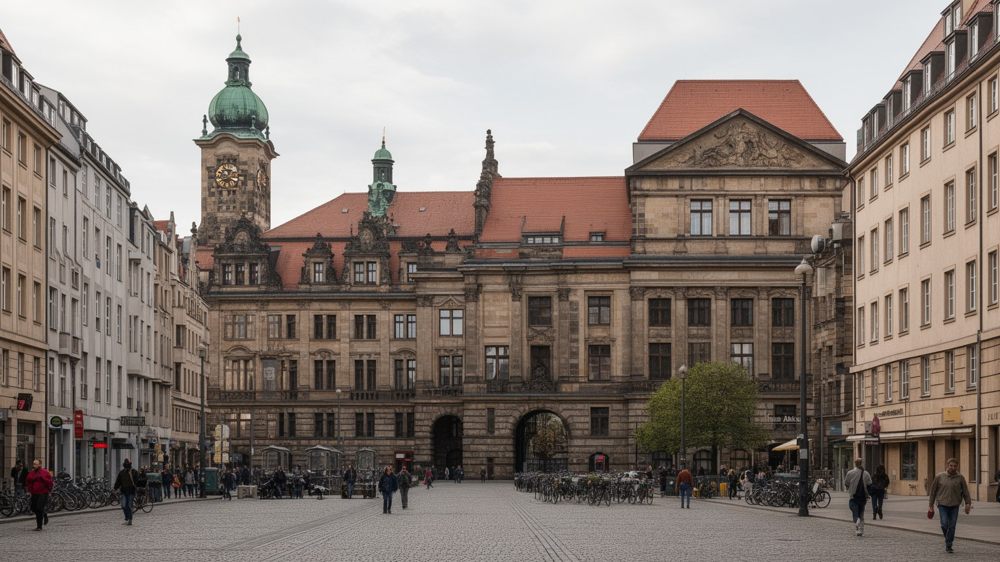
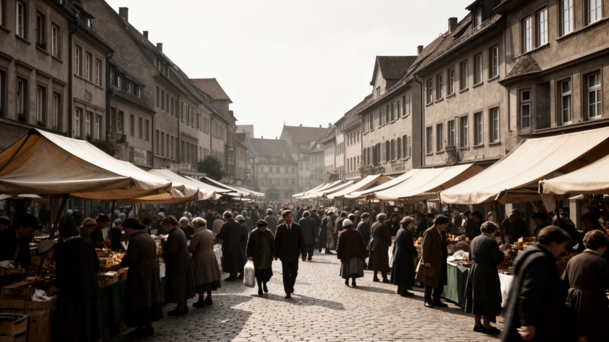
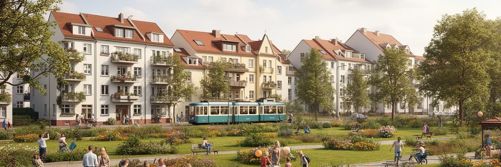
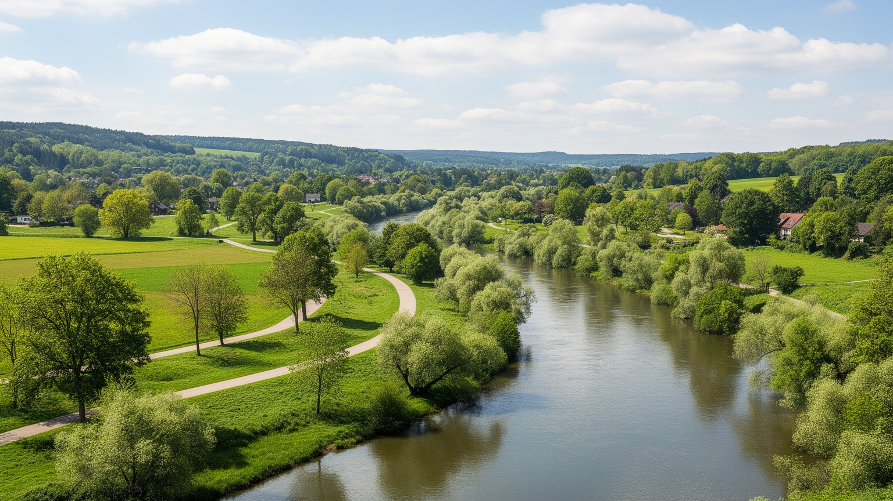
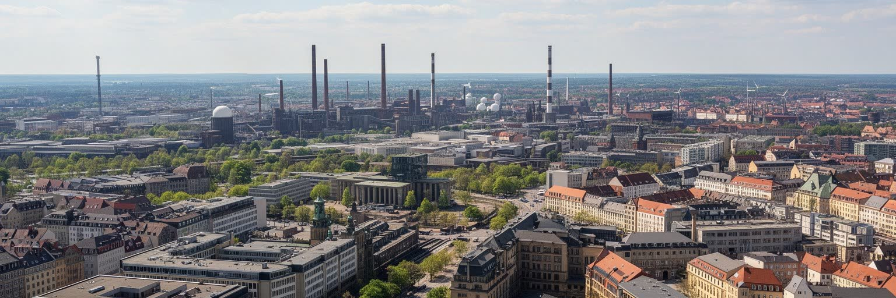

地政学
中央ドイツ都市圏はベルリン、プラハ、フランクフルト、ポーランド方面を結ぶ内陸回廊に位置します。旧東ドイツの制度転換を背負い、EU域内の製造、研究、物流、文化外交を担う地域として再接続されました。要地です。

🇩🇪 ドイツ / ザクセン・ザクセン＝アンハルト・テューリンゲン / World City Atlas
交易都市、大学都市、宮廷文化、光学産業、褐炭地帯、東西統一後の再編が重なる多核都市圏。ライプツィヒとドレスデンだけでなく、ハレ、ケムニッツ、イェーナ、エアフルトの生活圏を合わせて読む地域です。
都市の骨格
中央ドイツ都市圏は、エルベ川、ザーレ川、エルスター川、エルツ山地、テューリンゲンの森に囲まれ、交易路と工業地帯、大学都市、文化都市が短い距離で連なります。東ドイツの記憶と新しい研究産業が重なる地域です。

中央ドイツ都市圏はベルリン、プラハ、フランクフルト、ポーランド方面を結ぶ内陸回廊に位置します。旧東ドイツの制度転換を背負い、EU域内の製造、研究、物流、文化外交を担う地域として再接続されました。要地です。
褐炭と重工業の縮小後、半導体、光学、医療技術、自動車部品、物流、大学研究が雇用を作ります。再訓練、賃金差、若者流出と回帰、郊外工業団地の通勤が、都市圏の労働条件を形づけます。現場の技能も残ります。
バッハ、ゲーテ、ルター、宮廷文化、出版、見本市、教会音楽が地域の記憶を厚くします。宗教改革の土地でありながら世俗化も強く、教会は礼拝だけでなく音楽、追悼、市民活動の場でもあります。音が街を結びます。
住民の日常は大学街、団地、トラム、地方鉄道、森の散歩、旧市街の市場にあります。観光客はドレスデンやライプツィヒへ向かいますが、生活の質は家賃、交通、保育、文化施設の近さで決まります。日々を支えます。

中央ドイツ都市圏は、ライプツィヒ、ハレ、ドレスデン、ケムニッツ、イェーナ、エアフルトを一つの巨大市街地として塗りつぶす地域ではありません。都市の間には農地、森、丘陵、旧鉱山地帯、河川低地が挟まり、鉄道と高速道路がそれらを束ねます。ザーレ川と白エルスター川は交易と物流を支え、エルベ川はドレスデンをボヘミア方面へ開き、テューリンゲンの森とエルツ山地は工業、観光、防衛の境界を作ってきました。多核性は弱さではなく、大学、工場、劇場、行政機能を複数都市へ分散させる仕組みでもあります。ただし、中心が分かれるほど、通勤、医療、空港、研究投資、観光案内は広域で考えなければ機能しません。都市ごとの誇りと州境をまたぐ連携が同時に必要になる点に、この地域の読みどころがあります。地図上では近く見える都市同士も、交通会社や観光組織が別々に動くと、住民には乗り換えや制度差として感じられます。広域で見れば一つの市場でも、日々の暮らしでは市場、病院、学校、競技場を小さな中心ごとに使い分ける感覚が強いです。地元紙の配達圏やラジオの天気予報も生活圏を映します。山地と平野の境目は冬の移動、洪水対策、週末のハイキングや湖水浴の季節感を変えます。大都市圏という言葉の中に、田園、谷筋、大学町、旧鉱山の空白が残ることが、この地域を単純な都市連続体とは違うものにしています。
ライプツィヒは中世以来の交易と見本市の都市であり、東西南北の商人、出版業者、大学人が集まる場所でした。その役割は形を変え、今日ではライプツィヒ・ハレ空港、貨物鉄道、高速道路、展示会場、倉庫群として残ります。ドイツ中央部に位置するため、ベルリン、ミュンヘン、フランクフルト、プラハ、ワルシャワ方面へ短時間で接続できることが強みです。物流は便利なだけでなく、夜間貨物、倉庫労働、トラック交通、郊外の土地利用を伴います。見本市の華やかさの背後には、設営、清掃、警備、配送、通訳、ホテル、飲食の現場があり、駅前のパン店やケバブ店、仮設屋台も人の流れを受け止めます。中央ドイツを読むには、商人の歴史と現代のサプライチェーンを切り離さず、同じ地理が何度も使い直されていることを見る必要があります。貨物の速さは都市の成長を支えますが、住民の夜の静けさや働く人の休息とも調整されなければなりません。展示会で人と商品が集まる時、宿泊費、臨時雇用、駅の混雑、清掃の負担も一緒に増えます。空港貨物は国際企業を呼び込む一方、滑走路近くの集落には騒音の不公平を残します。出版と書籍見本市の記憶も重要です。物だけでなく知識、楽譜、思想、人材が集まった歴史があるからこそ、現在の物流都市も単なる倉庫群ではなく、交流の都市として理解できます。

中央ドイツの周辺には、褐炭採掘と発電が地域経済を支えた場所が多いです。露天掘りは安いエネルギーと雇用を生んだ一方、村の移転、景観の破壊、水質への影響、粉じん、炭素排出を残しました。統一後の工場閉鎖とエネルギー転換は、地域の仕事と誇りを大きく揺さぶりました。現在、採掘跡地の一部は湖、レクリエーション地、自然再生地、太陽光発電、工業団地へ姿を変えていますが、転換は写真のように滑らかではありません。古い技能をどう生かすか、若者をどう残すか、失われた村の記憶をどう扱うかが問われます。環境再生は観光資源になる一方で、雇用の質や公共交通を伴わなければ生活の再生には届きません。褐炭の地域を歩くと、エネルギー政策が抽象的な数字ではなく、家族史、学校、店、湖岸の新しい週末に結びついていることがわかります。夏の湖では水泳、ボート、自転車道、家族のピクニックが増え、旧鉱山の硬い風景に水音と焼きソーセージの匂いが加わります。脱炭素は、過去を責めるだけでなく、次の仕事を作る約束として実行されなければなりません。観光客が夏に訪れる場所と、冬に職を探す住民の場所は同じです。鉱山で働いた人の技能は、土木、機械保守、エネルギー設備に生かせる可能性があります。再訓練が形式だけで終わると、転換は地域への命令に見えます。住民が次の産業を自分のものと思えるかが成否を分けます。

中央ドイツ都市圏の現在を支える柱の一つは、大学研究と高度製造の組み合わせです。ドレスデン周辺では半導体、電子機器、材料研究が集積し、イェーナでは光学、医療技術、精密機器の伝統が息づきます。ライプツィヒやケムニッツでは自動車、機械、ソフトウェア、物流関連の仕事が広がり、ハレやエアフルトにも大学、研究所、行政機能があります。これらの産業は、熟練工、技術者、研究者、職業訓練、国際企業、地元中小企業の連携で成り立ちます。高度製造は地域の賃金を上げる可能性を備えつつ、専門人材の不足、住宅費、移民受け入れ、研究成果の地域還元を重い論点にします。旧東ドイツの産業基盤を単に過去として扱わず、精密な現場技能を新しい生産へ接続することが重要です。研究都市として成功するには、工場のクリーンルームだけでなく、学生寮、保育、公共交通、多言語の生活支援が必要です。大学町では講義帰りの学生が本屋、安食堂、映画館、ライブハウスを支え、地域紙や大学メディア、掲示板、SNSが就職や部屋探しの情報網になります。工業高校や職業学校も、研究所と町工場の間をつなぎます。光学や医療技術も、研究室だけでなく精密な加工現場と長い教育の積み重ねに支えられます。先端産業を地域の誇りにするには、成果が一部の専門職だけでなく、周辺の学校、住宅、職業訓練へ戻る仕組みが欠かせません。

中央ドイツ都市圏の社会を読むには、東西統一後の経験を避けられません。社会主義期の工場、団地、保育制度、文化会館、国営企業は一気に市場経済へ組み込まれ、多くの職場が閉じ、失業と人口流出が起きました。若者は西側の都市へ移り、残った地域では空き家、縮小する商店街、老朽化した団地が重い論点になりました。一方で、再開発、大学投資、鉄道整備、旧市街の修復、企業誘致によって、ライプツィヒやドレスデンは再び人口を集める都市にもなりました。統一は成功物語だけではなく、尊厳を失ったと感じる人、職業の価値が急に変わった人、政治不信を抱えた人の記憶も含みます。都市の明るい成長の背後で、地方部や旧工業地区には取り残され感が残ることがあります。だから中央ドイツを評価する時は、新しい企業の数だけでなく、生活がどう再建され、誰が声を持ち、どの記憶が公共空間に残されているかを見る必要があります。失業を経験した世代と、統一後に生まれた世代では、同じ駅前の再開発も違って見えます。前者には失われた職場の記憶があり、後者には学び直しや移住の選択肢があります。学校、博物館、職場、地方紙、ローカルラジオが対話の場になれるかは重要です。政治的不満や移民への反発も、この社会的な傷と切り離せません。参加の機会を増やし、地域の成功を一部の都市だけに集中させない配慮が欠かせません。

中央ドイツは宗教改革、教会音楽、大学文化の記憶が濃い地域です。ヴィッテンベルクのルター、ライプツィヒのバッハ、ヴァイマルのゲーテとシラー、エアフルトやイェーナの学問は、都市圏を単なる工業地域ではなく、思想と芸術の回廊として見せます。教会は礼拝の場であるだけでなく、オルガン音楽、合唱、追悼、平和祈祷、市民集会の場所でもありました。特にライプツィヒの教会は、東ドイツ末期の市民運動を支えた記憶を持ちます。現在の地域は世俗化が強く、教会に通う人は多くない地区もありますが、教会建築と音楽祭は公共文化として生き続けます。文化遺産は観光客に向けた美しい背景ではなく、住民が過去を語り、政治的な勇気や共同体の記憶を確認する場所でもあります。バッハ週間、劇場、学生オーケストラ、学校の合唱、クラブや小さなライブハウスまで重ねると、信仰が薄れても祈りと音楽の形式が公共の言語として残ることがわかります。夜の旧市街では石畳に足音が響き、教会の鐘、トラムの音、バーのざわめきが重なります。屋台のビールや夜食も、演奏後の会話を長くします。夏の野外映画や小劇場、大学祭のステージは、古典音楽だけではない若い文化を見せます。移民の礼拝所や新しい音楽文化も加わり、古い教会都市の記憶は単一の伝統ではなく、複数の声が響く場へ変わっています。

ドレスデン、ワイマール、エアフルト、ライプツィヒ、マイセンなどの旧市街は、宮廷文化、商業、宗教、大学、戦災、復元が重なっています。ドレスデンのバロック建築はエルベ川沿いの壮麗さで知られますが、その美しさは空襲による破壊と戦後復元の記憶を背負います。ワイマールは古典主義とバウハウスの都市である一方、近郊には強制収容所の記憶もあります。エアフルトの橋上家屋や大聖堂、ライプツィヒの商館とパサージュ、マイセンの陶磁器は、地域の都市文化を細かく分けます。旧市街は観光の舞台であると同時に、住民の買物、通学、行政手続き、結婚式、抗議集会の場所でもあります。市場では野菜、チーズ、ソーセージ、花、焼き菓子が並び、冬市では香辛料の匂いと温かいワインの湯気が広場を満たします。パサージュや百貨店、古書店、蚤の市は、観光土産と普段の買物を同じ通りに並べます。復元された景観を見る時は、どの時代を残し、どの痕跡を消したのかを考える必要があります。美しい石畳の下には、ユダヤ人の不在、戦争、社会主義期の改造、統一後の商業化が重なっています。復元された広場は誇りを与えますが、記憶を整えすぎる危険もあります。壊れたもの、残らなかった家族、社会主義期に建てられた建物、移民の店まで含めて見る時、旧市街は絵葉書ではなく生きた記録になります。

中央ドイツ都市圏の日常は、トラム、地方鉄道、団地、旧市街の市場、大学街、郊外の戸建て、森や湖への短い移動で成り立ちます。ベルリンやミュンヘンに比べると住宅費が抑えられる都市も多く、学生、若い家族、芸術家、研究者が移り住む理由になってきました。しかし人気が高まる地区では家賃上昇や再開発が進み、古い住民や低所得者が中心部に残りにくくなります。統一後に空室が多かった団地は、改修されて住みやすくなった場所もあれば、人口減少と高齢化に悩む場所もあります。日常生活では、保育園、病院、学校、買物、文化施設、公共交通の頻度が大きな差を生みます。都市間の距離が近くても、夜間や休日の交通が弱ければ、若者や高齢者の生活圏は狭くなります。暮らしを読む時は、中心部のカフェや修復された広場だけでなく、駅から離れた住宅地、空き店舗、団地の中庭、移民の食料品店を見る必要があります。パン屋の朝の匂い、トラムのベル、夕方の中庭の声は、小都市らしい近さを感じさせます。子どもは校庭やスポーツクラブでサッカーやハンドボールに親しみ、年配の住民は市場、薬局、教会コンサート、散歩道を生活の支点にします。学生には夜の交通とアルバイトが必要で、家族には保育と安定した通勤が欠かせません。市場の朝、団地の夕方、大学街の夜を合わせて見れば、生活の速度が一つではないことがわかります。

中央ドイツの観光は、ドレスデンの美術館と宮殿、ライプツィヒの音楽と見本市、ワイマールの文学、エアフルトの旧市街、イェーナの大学と光学、エルツ山地の町、テューリンゲンの森、採掘跡地から生まれた湖を組み合わせて楽しめます。都市と自然が近いことは、この地域の大きな魅力です。週末には鉄道で森へ向かい、湖岸を歩き、旧市街で市場を巡り、夜は演奏会、劇場、学生街のバーへ行く生活が可能です。一方で観光は、混雑、短期滞在の増加、中心部の商業化、記念品化された歴史を生むこともあります。美しい宮殿や音楽祭だけを追うと、褐炭地帯の転換、統一後の空き家、移民労働、地方交通の弱さは見えにくいです。観光を地域理解の入口にするなら、名所を移動するだけでなく、駅前の商店、地方のバス時刻、湖の再生事業、教会の演奏会、団地の壁画まで目を向けたいです。サッカーの試合日には駅や酒場の空気が変わり、冬のクリスマスマーケットでは木工品、菓子、スパイスの匂いが街を包みます。夏祭りや町のワイン祭では、観光客と近所の家族が同じ長椅子に座ります。鉄道で移動する旅は、車窓の農地、風力発電、湖、古い工場、大学町の駅を通して、名所の間にある生活を見せます。観光が地域へ利益を残すには、滞在先、食事、交通、ガイドが大都市だけに偏らないことも大切です。

中央ドイツ都市圏は、巨大な単一都市ではなく、複数の歴史都市、大学、工場、森、湖、旧鉱山地帯が短い距離で連なる地域都市です。ライプツィヒの交易と音楽、ドレスデンの宮廷文化と半導体、ハレの大学と化学、ケムニッツの工業記憶、イェーナの光学、エアフルトの旧市街と行政、ワイマールの文学は、それぞれ別の入口を持ちます。重要なのは、これらを観光名所の列としてではなく、東西統一、産業転換、研究投資、宗教改革の記憶、世俗化、住宅、交通、政治的不満が重なる一つの広域生活圏として読むことです。中央ドイツの強さは、過去を消して新しいブランドを貼ることではなく、褐炭、社会主義、戦災、宮廷文化、大学研究を同じ地図で扱える点にあります。成長する都市と縮小する町、専門職と現場労働、観光地と生活地の差をどう埋めるかが問われます。地方紙、公共放送、大学の発信、クラブの掲示、商店街の口コミは、広域圏を日常の情報網として結びます。この地域を見ると、世界都市の重要性は人口の巨大さだけでなく、転換期の社会をどれだけ丁寧に支えられるかにも表れることがわかります。統一後の不信、移民受け入れ、極右への警戒、気候政策への反発、市民活動の粘り強さも現実です。広場、教会、大学、労組、劇場、地方紙が対話の場所として機能するかどうかが、地域の民主主義を支えます。